Things to explore 12
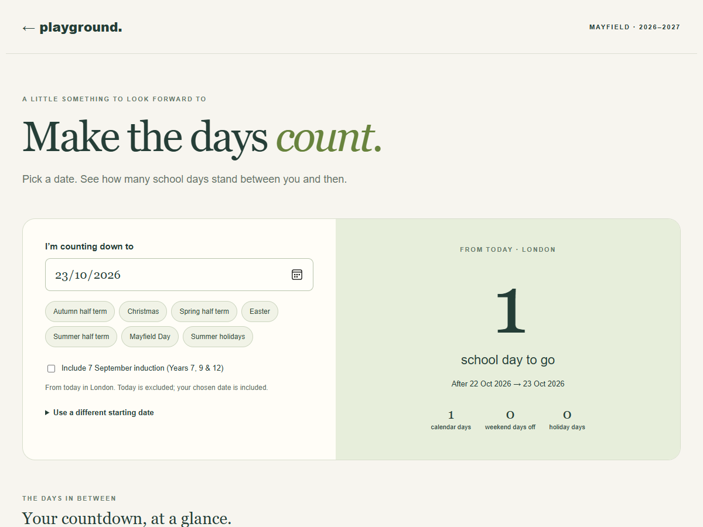
12 / SCHOOL DAYSMake the days count.
Pick a milestone and count the school days until you get there. A visual countdown using Mayfield’s 2026–2027 term dates, holidays and Mayfield Day.
Count your school days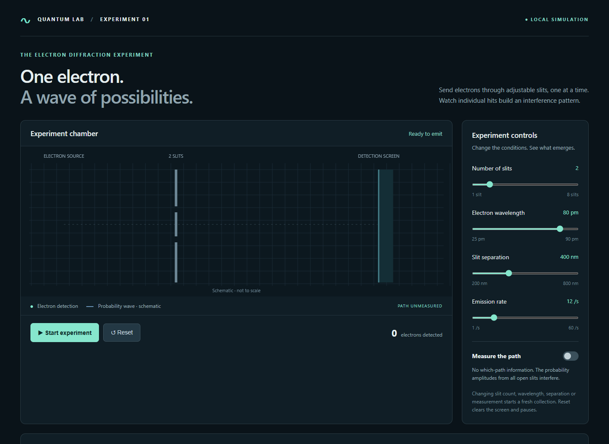
01 / QUANTUM LABOne electron at a time.
Fire electrons through slits and watch a wave pattern emerge. A small experiment with a surprisingly big idea.
Enter the experiment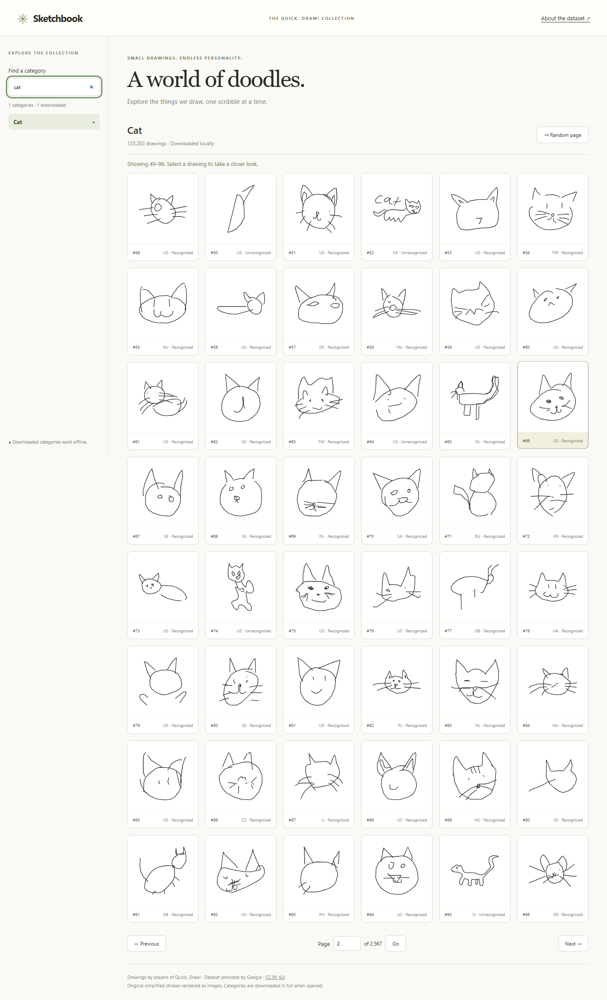
02 / SKETCH ANALYSISA world of quick sketches.
Explore the Quick, Draw! dataset. Browse doodles, bring them to life, and find the patterns hiding in the scribbles.
Explore the drawings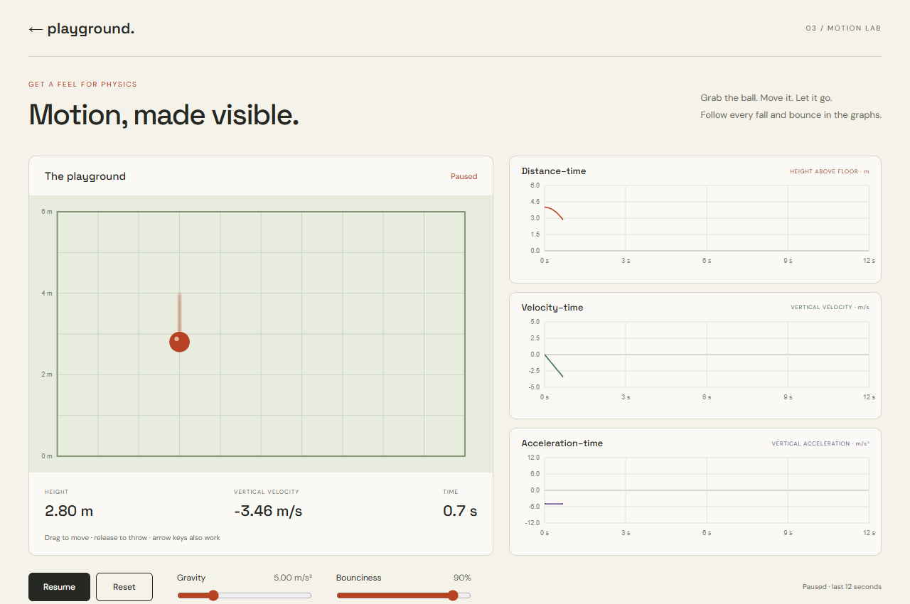
03 / MOTION LABGive an idea a little push.
Grab, throw, and bounce a ball. Watch its motion unfold in live distance, velocity, and acceleration graphs.
Play with motion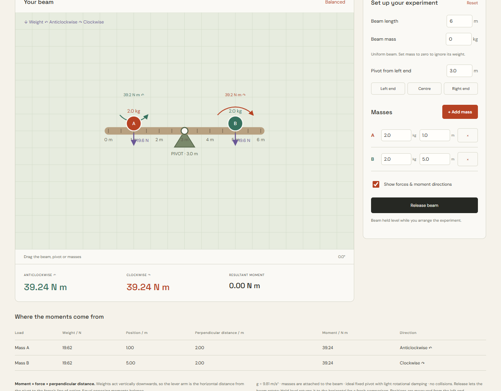
04 / MOMENTS LABFind the balance.
Place a pivot, load a beam, and explore the turning effect of forces. Try ten everyday balancing challenges in game mode.
Experiment with moments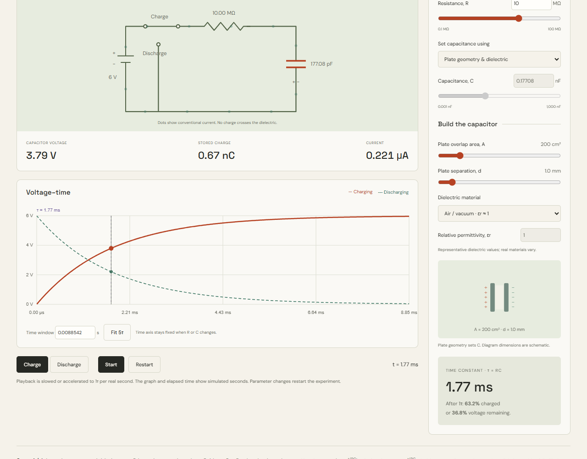
05 / CAPACITOR LABA curve worth exploring.
Build a capacitor, change the resistance, and watch it charge and discharge. Explore the time constant behind the curves.
Explore the circuit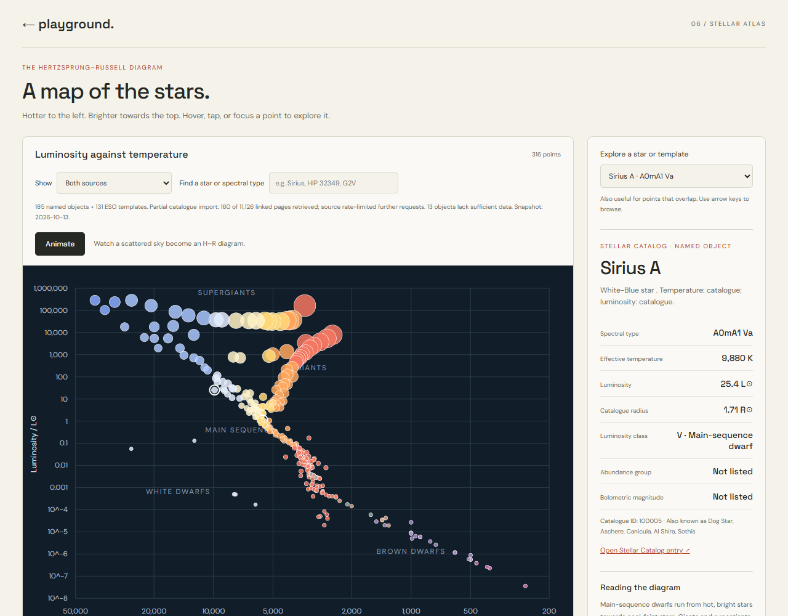
06 / STELLAR ATLASA map of the stars.
Explore named stars and the ESO spectral library on an H–R diagram. Discover how temperature, luminosity, and stellar size fit together.
Explore the stellar atlas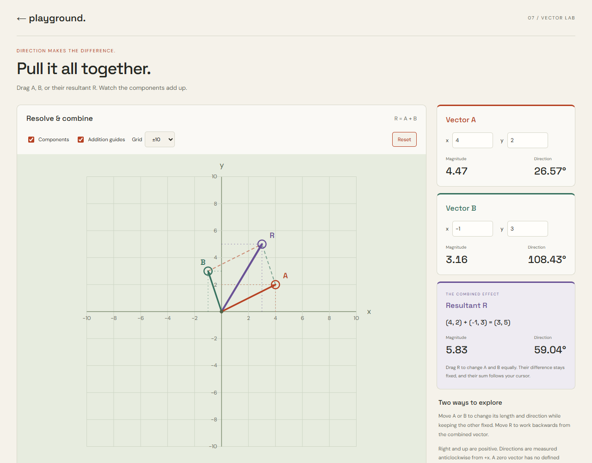
07 / VECTOR LABPull it all together.
Add and drag vectors or their resultant. Resolve their components and watch the combined effect change in real time.
Explore the vectors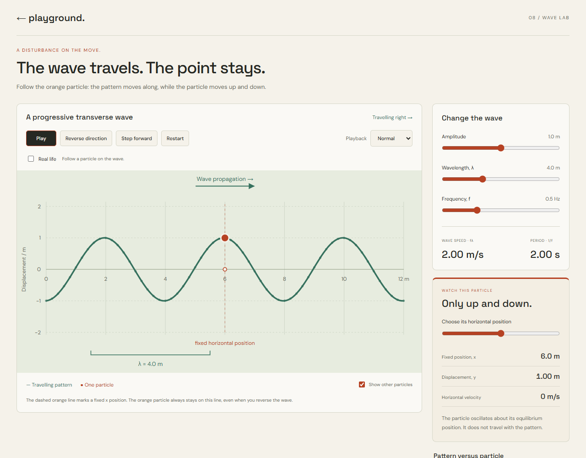
08 / WAVE LABThe wave travels. The point stays.
Follow one particle as a wave passes. Pause, reverse, and explore why the pattern moves along while the particle moves up and down.
Explore the wave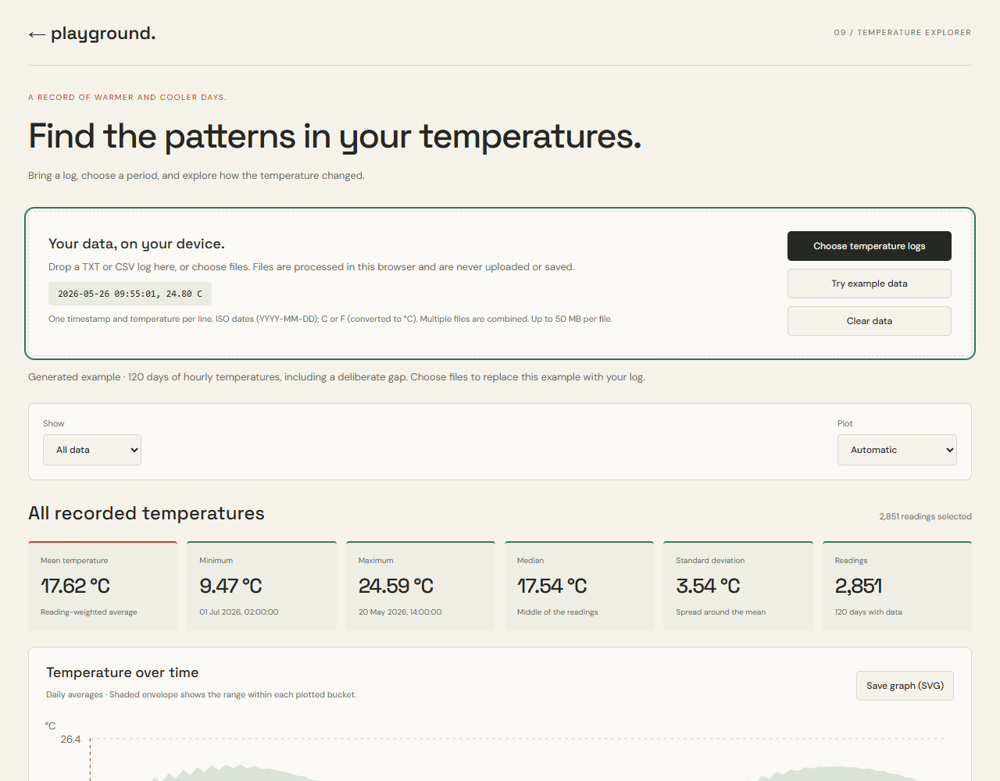
09 / TEMPERATURE EXPLORERA record of warmer days.
Upload a temperature log and find the patterns. Graph a week, month or year, compare averages, and explore the highs and lows.
Explore your temperatures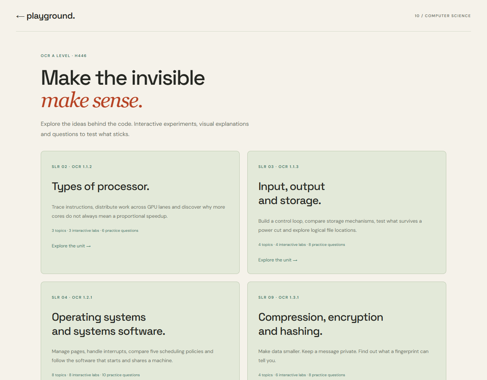
10 / COMPUTER SCIENCEMake the invisible make sense.
Explore OCR A Level concepts through experiments and diagrams. Explore processors, storage, operating systems, compression, encryption and hashing in SLRs 2, 3, 4 and 9.
Explore computer science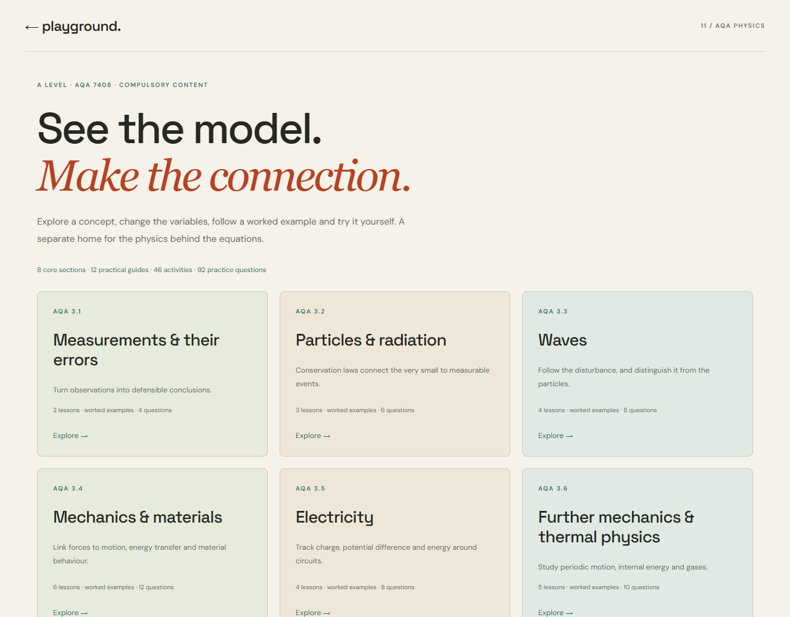
11 / AQA PHYSICSSee the model. Make the connection.
Explore AQA A Level Physics core topics with simulations, worked examples and questions. Practise graph analysis for the required practicals.
Explore AQA Physics